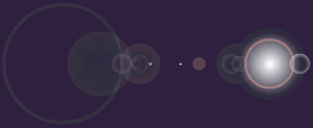

Creating a lensflare


Lensflares are actually possible within Flash. Not raster, but a real vector lensflare. Don't overuse them though...
A lensflare is composed of several circles, and rings.

Let's start with the giant lightball in the righthand part of the image.
Step 1. Select the pencil tool and draw a circle, the same size as on the image.
Step 2. Select the gradient tool, and create a gradient ranging from white, to white transparent. You make the last color transparent, by setting it's alpha channel to 0%.
Step 3. Fill the circle with the gradient, and delete the outline by selecting it with the arrow, and pressing delete.
Now proceed to the pink-orange ring placed on top of the giant lightball.
Step 1. Select the color editing tool, and match the color of the ring. (It should be about 50%) transparent.
Now you actually have all the knowledge you need to create the lensflare. The lensflare is built up from these rings and lightballs, and placed according to the image in the beginning of this file. Simply try to match the rings and the lightballs in color, size and location, using the two techniques explained here, and there you have it folks... A lensflare.
It's a Kodak moment!